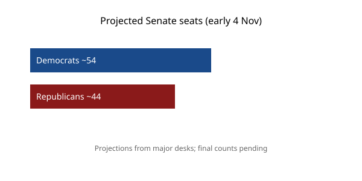

United States · elections · 4 November 2026
Major desks project Democrats have secured control of the House and the Senate.

What is agreed across desks
By the morning of 4 November 2026, NBC News, The Guardian, Axios, Ballotpedia, and other major outlets reported that Democrats had secured enough seats to control both the House of Representatives and the Senate in the midterm elections held the previous day. House projections placed Democrats above the 218-seat majority threshold, with some estimates in the low-to-mid 220s or higher depending on remaining uncalled races. In the Senate, projections indicated a Democratic majority of approximately 54 seats, including independents who caucus with the party, after flips in multiple states.
Specific projected flips reported across desks included James Talarico in Texas over Ken Paxton, Sherrod Brown in Ohio, Roy Cooper in North Carolina, and additional gains in Kansas, Iowa, Maine, and South Carolina. Several governor’s races were also called for Democrats, including in Texas and Georgia. These figures come from news-organization decision desks that combine counted votes, remaining ballots, and historical turnout patterns. They are not official certifications.
What is only a quote or projection
Characterizations such as “blue tsunami,” “historic rebuke,” or “beginning of the end to the Trump era” appear in headlines and commentary. They are interpretive framing. The checkable facts are the seat counts projected by the desks and the identity of the candidates those desks have called as winners. President Trump’s reported statement congratulating Democrats is a quote attributed to him; its exact wording and context should be verified against primary video or transcript when available.
Early-night calls can be revised if late ballots shift margins. As of the morning of 4 November, several races remained uncalled, including tight contests in Alaska and Mississippi. Final official results will be certified by state election authorities over the coming days and weeks.
Mechanism a reader needs
In the United States, midterm elections occur halfway through a presidential term. All 435 House seats and approximately one-third of Senate seats are contested. A simple majority (218 in the House, 51 in the Senate) determines control of each chamber and therefore the power to schedule legislation, hold hearings, and confirm or block executive appointments. Because many states use different methods for counting mail and provisional ballots, complete tallies can take days. Decision desks therefore issue projections before every ballot is counted.
Control of Congress shapes the remainder of a presidency. A president whose party loses both chambers typically faces greater difficulty advancing legislation and greater exposure to oversight. That institutional fact is independent of any particular president’s popularity or any single issue such as inflation, foreign policy, or candidate quality. The 2026 results will be studied for their causes; those studies are not yet available on the morning after the election.
What this story is not
It is not a final certified result. It is not evidence that any particular policy caused the outcome. It is not a photograph of election-night celebrations or concession speeches. The image above is a daytime exterior of the Capitol building taken years earlier.

Source articles and scores
| Outlet | Headline | T | N | C |
|---|---|---|---|---|
| NBC News | Election results 2026 live updates: Democrats win House, Senate in major rebuke of Trump, Republicans | 94 | -5 | 95 |
| The Guardian | US midterm elections 2026 live updates: Democrats take control of Congress in major setback for Trump | 93 | -8 | 92 |
| Ballotpedia | Democrats win U.S. House and Senate majorities | 96 | 0 | 100 |
Images: Wikimedia Commons type photograph of the Capitol exterior linked via Special:FilePath. Caption states it is not an event scene. onerror falls back to committed SVG. Chart is original local SVG. No crossorigin attribute.